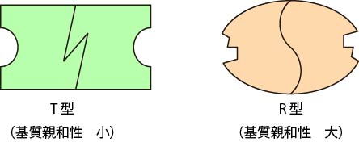
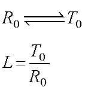
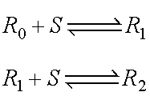
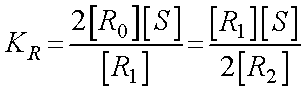

アロステリックモデル-02
協奏モデル
ここで，前提として，（ストライヤーを参考にして）
おのおの活性部位を一つ持つ同じサブユニットを2個からなる酵素を考える
サブユニットは基質に対する親和性の強いコンフォメーションRと，弱いTの二つの形が存在しうる
RとTは相互変換するが，二量体である酵素分子内では二つのサブユニットが常に同じコンフォメーションをとる
つまり，RR，TTはよいが，RTは存在しない
を仮定します．

基質がないとき酵素は，R0とT0の状態をとり，両者の比はLとします．

いま簡単にTは基質と結合しないとします．
R型の酵素には１または２分子の基質が結合するとして，それぞれ，R1，R2とします．

そのときの解離定数は，

となる，とストライヤーに書いてあります．．．．
はて？？なぜ，係数２が？しかも，分子と分母に．．．．
次ページではこれを考えていきましょう．